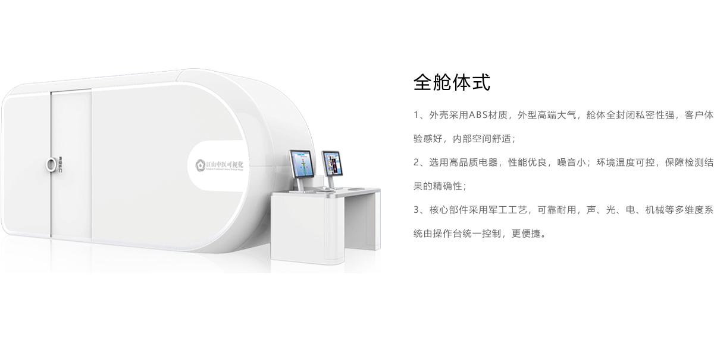

<div class="hardware-view">
    <div class="header">
        <div class="nav-title">硬件系列</div>
        <p class="work">— 数据采集工作站 —</p>
        <div class="nav-content">
            所有产品红外探测器采用
            <span class="select-color">高精确</span>
            的硬件设备，能够保证人体红外温度监测的灵敏性和特异性。设备取得了陕西省食品药品监督管理局颁发的二类医疗器械许可证，产品质量安全可靠。
        </div>
    </div>
    <div class="contents">
        <p class="btn-box">
            <button nz-button nzType="default" class="quca" (mouseenter)="showimg(0)">全仓体式</button>
            <button nz-button nzType="default" class="lizh" (mouseenter)="showimg(1)">立柱式</button>
            <button nz-button nzType="default" class="bixi" (mouseenter)="showimg(2)">便捷式</button>
        </p>
        <div class="img-box" *ngIf="hardwarelist[0].falg" @transverse>
            
        </div>
        <div class="img-box" *ngIf="hardwarelist[1].falg" @transverse>
            
        </div>
        <div class="img-box" *ngIf="hardwarelist[2].falg" @transverse>
            
        </div>
    </div>
</div>